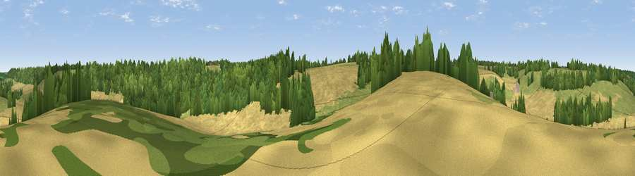

Viewpoint near Lymbridge Green
#41204 in England · top 72% of its area beats it · near Lymbridge GreenWhere it is
The exact computed spot (TR 12075 45875). Click the marker for map links.
The view, rendered

A 360° render of this exact spot computed from the terrain model, tree cover and land cover — summer colours, afternoon light, calibrated against photographs of famous viewpoints. Real trees, hedges and buildings will differ in detail.
The panorama
Grey silhouette: terrain skyline in each direction (720 bearings, Earth curvature and refraction included). Dashed green: skyline with trees (+15 m) and buildings (+8 m) as obstacles. Blue strip: how far the ground is visible on each bearing.
Where the view opens
Wedge length = distance to the farthest visible ground on that bearing (vegetation-aware). Rings at 10, 25 and 50 km.
What fills the view
40% cropland · 31% woodland · 29% grassland
Angular shares of the visible panorama (visual magnitude), not map area. Landscape diversity 0.48 (0–1 Shannon).
Key numbers
More beautiful places nearby
The staircase of upgrades: each row has a higher view potential than everything closer. Driving times are estimates from straight-line distance, calibrated against real road routing — check an actual route before setting out.
| Place | Direction | Drive | Score |
|---|---|---|---|
| Viewpoint near Stelling Minnis | NE · 1 km | ~3 min | 25.7 |
| Viewpoint near Stelling Minnis | NNE · 2 km | ~4 min | 26.5 |
| Viewpoint near Hastingleigh | SW · 4 km | ~9 min | 70.2 |
| Viewpoint near Brabourne | SW · 4 km | ~9 min | 71.6 |
| Viewpoint near Brabourne | SSW · 4 km | ~9 min | 71.9 |
| Tolsford Hill | SSE · 8 km | ~17 min | 77.9 |
| Viewpoint near Capel-le-Ferne | SE · 14 km | ~26 min | 80.2 |
| Viewpoint near Willingdon | SW · 70 km | ~93 min | 83.4 |
51.17277, 1.03243 · source: screening · position refined by local search. Computed location — check access rights before visiting.